Editorial prototype local preview
同条件・native時計・アニメ領域だけのMP4。左:元の全画面演出、右:C回避recipe。独立視覚レビューは未判定。この3例以外の中央通常円不足は未解決。
magazine-headline-4
{"id":"magazine-headline-4","layout":"magazine","W":640,"H":640,"text":"風の先へ","radius":0.1,"cx":0.9,"cy":0.1,"params":{"variant":"headline"},"seed":704,"center":{"x":0.9,"y":0.1},"font":"C editorial pinned actual-face fixture","sameFontBothSides":true,"stage":[640,640]}
before
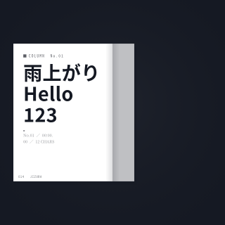
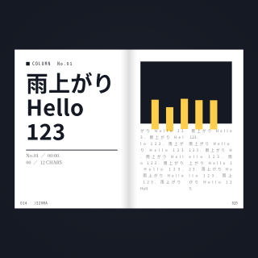
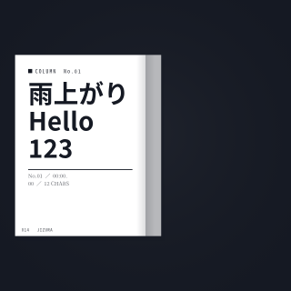
after
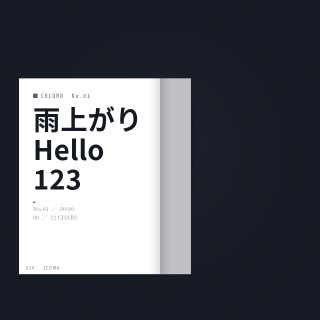
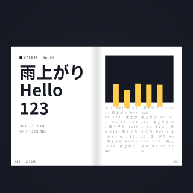
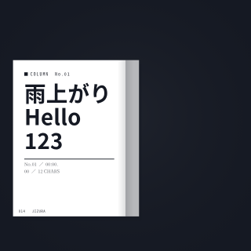
contents-tate-1
{"id":"contents-tate-1","layout":"contents","W":960,"H":540,"text":"風の先へ","radius":0.2,"cx":0.5,"cy":0.42,"note":"遠い空の向こうへ","params":{"variant":"tate"},"seed":704,"center":{"x":0.5,"y":0.42},"font":"C editorial pinned actual-face fixture","sameFontBothSides":true,"stage":[960,540]}
before
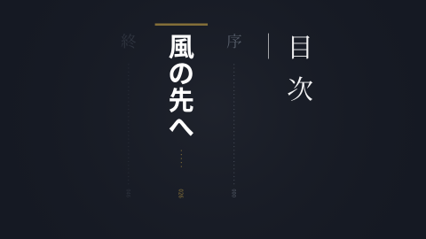
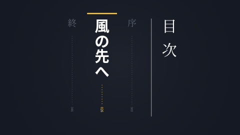
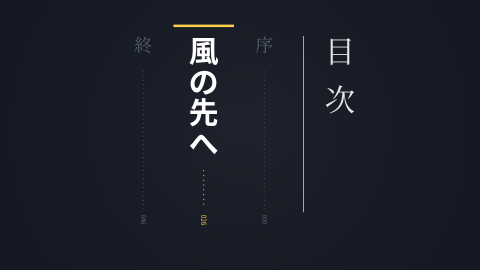
after
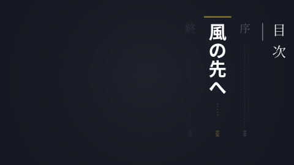
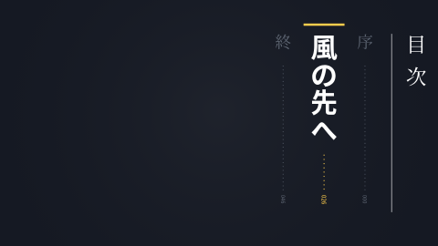
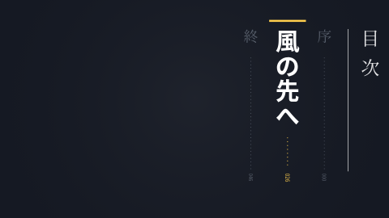
footnote-native-1
{"id":"footnote-native-1","layout":"footnote","W":960,"H":540,"text":"風の先へ","radius":0.2,"cx":0.5,"cy":0.42,"note":"遠い空の向こうへ","params":{"marks":"kome","top":false,"align":"center"},"seed":704,"center":{"x":0.5,"y":0.42},"font":"C editorial pinned actual-face fixture","sameFontBothSides":true,"stage":[960,540]}
before
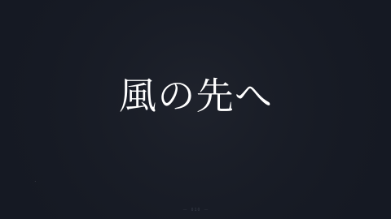
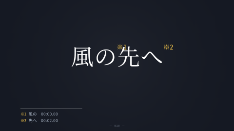
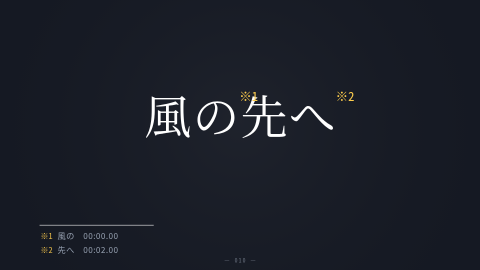
after
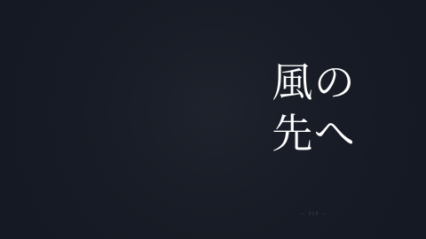
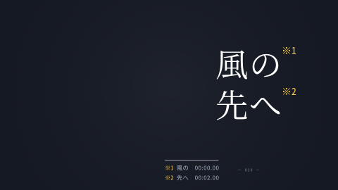